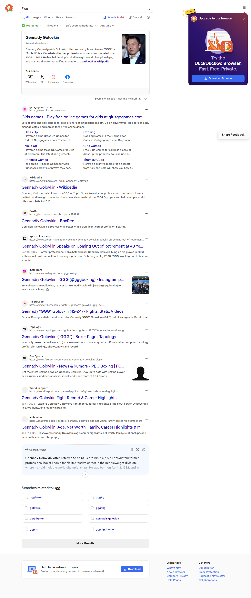

🦆 نتایج جستجو در DuckDuckGo
عبارت جستجو:
Ggg
نوع:
همه موارد
10 نتیجه
SafeSearch:
غیرفعال (Off)
تاریخ:
۱۴۰۵/۲/۲۳, ۲:۴۷:۰۴

📋 لینکهای پیدا شده
🔗 https://www.girlsgogames.com/
🔗 https://en.wikipedia.org/wiki/Gennady_Golovkin
🔗 https://boxrec.com/en/box-pro/356831
🔗 https://www.si.com/fannation/boxing/gennady-golovkin-speaks-on-coming-out-of-retirement-at-43-years-old
🔗 https://www.instagram.com/gggboxing/
🔗 https://www.trillertv.com/fighter/gennady-golovkin-ggg/1749/
🔗 https://www.tapology.com/fightcenter/fighters/220305-gennady-golovkin-ggg
🔗 https://www.foxsports.com/boxing/gennady-golovkin-player
🔗 https://worldinsport.com/gennady-golovkin-fight-record-career-highlights/
🔗 https://mabumbe.com/people/gennady-golovkin-age-net-worth-family-career-highlights-more/